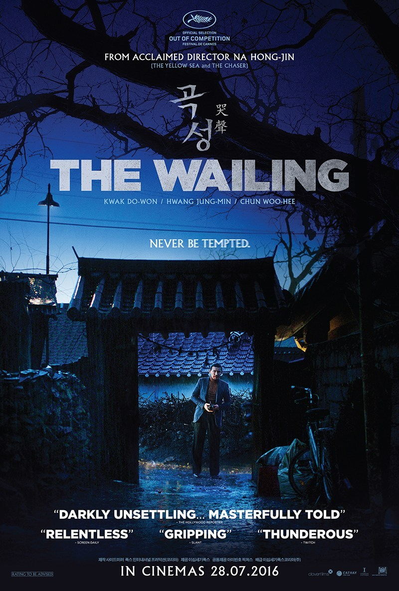
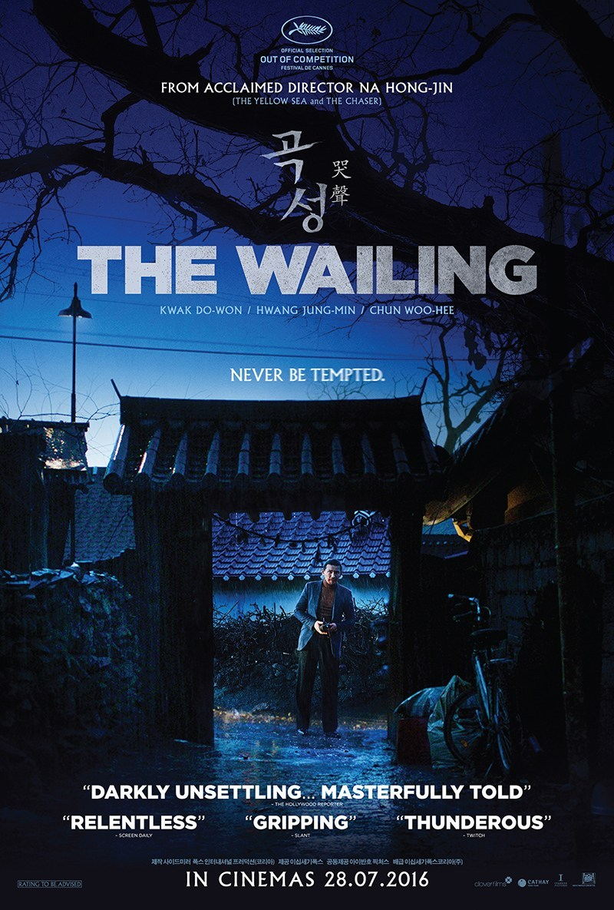

- Movies to Watch when Self Quarantine 🚀
From what we know indonesia has been apply self quarantine method due the covid-19 pandemic. Now Indonesia have 8211 positive confrimed cases at the time of writing. So i would like to recomended some movies to watch during coronavirus self-quarantine.
1. Spirited Away
2. Memories of Murder
3. The Wailing
4. Parasite
5. Sky Castle 
